06.2 벨만 방정식 도출
그림 06-2 칠판에 적어둔 상태 가치 점화식 V(s)을 활용하여 타일 표적 위에 종이비행기를 날려 전이 확률 게임을 시험하는 도로시와 지니
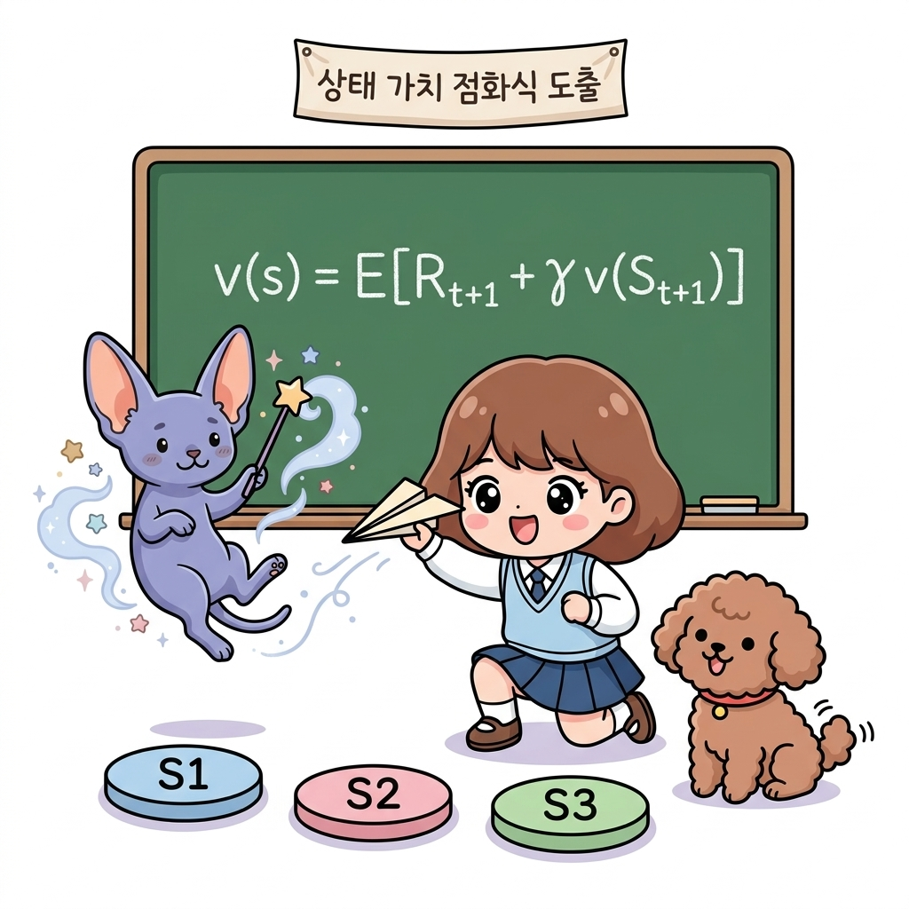
현재 상태의 가치 $V(s)$를 다음 단계 상태들의 가치 $V(s’)$와의 순환 점화식으로 연결하여 풀어내는 벨만 방정식 도출 과정을 공부합니다. 도로시의 종이비행기 날리기 징검다리 전이 놀이와 지니의 칠판 전개 수식을 통해, 점진적 점화식의 비밀을 경쾌하게 정복해봅시다!
이번 절에서는 벨만 방정식을 도출하겠습니다. 하지만 그전에 간단한 예를 이용해 확률과 기댓값에 대해 복습해보죠. 확률과 기댓값에 자신이 있다면 06.2.1절은 건너뛰고 곧바로 06.2.2절로 넘어가도 좋습니다.
06.2.1 확률과 기댓값
주사위를 예로 들어 설명하겠습니다.
이상적인 주사위
각각의 눈이 나올 확률이 정확하게 1/6 씩인 이상적인 주사위라고 가정하죠. 이때 눈 개수를 x라는 확률 변수로 표현하면 x는 1부터 6까지의 정수가 될 수 있습니다.
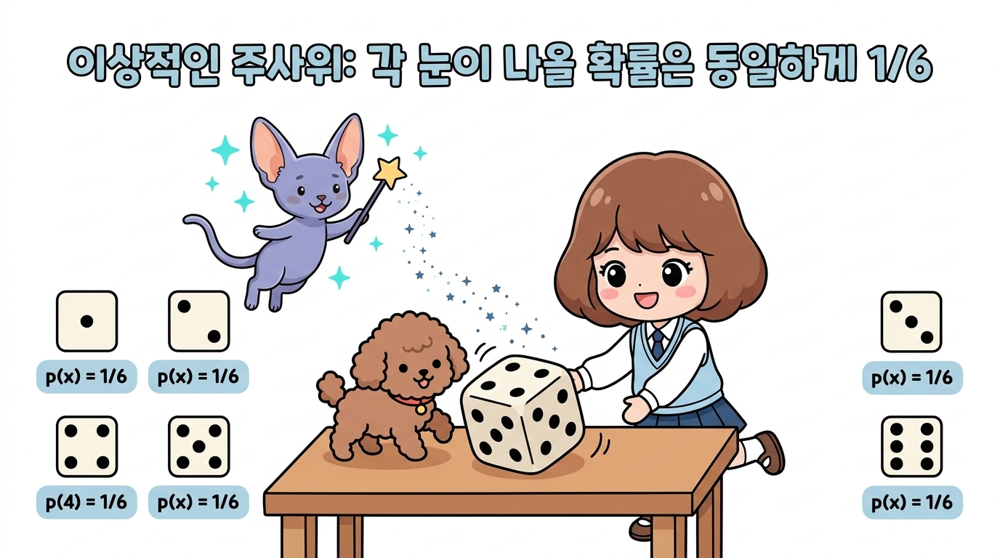
그리고 확률은 모두 1/6 씩이니, 각 눈이 나올 확률을 다음 식으로 표현할 수 있습니다. \(p(x) = \frac{1}{6}\)
주사위 눈의 기댓값
이제 주사위를 굴렸을 때 나올 눈의 기댓값을 구해봅시다.
복습! 기댓값(Expectation)이란 무엇일까요? 기댓값(기대 수익/평균 보상)은 어떤 사건이 일어날 확률과 그때 얻을 수 있는 보상을 곱한 값을 모든 경우에 대해 더해 구한 평균적인 수익 값을 의미합니다.
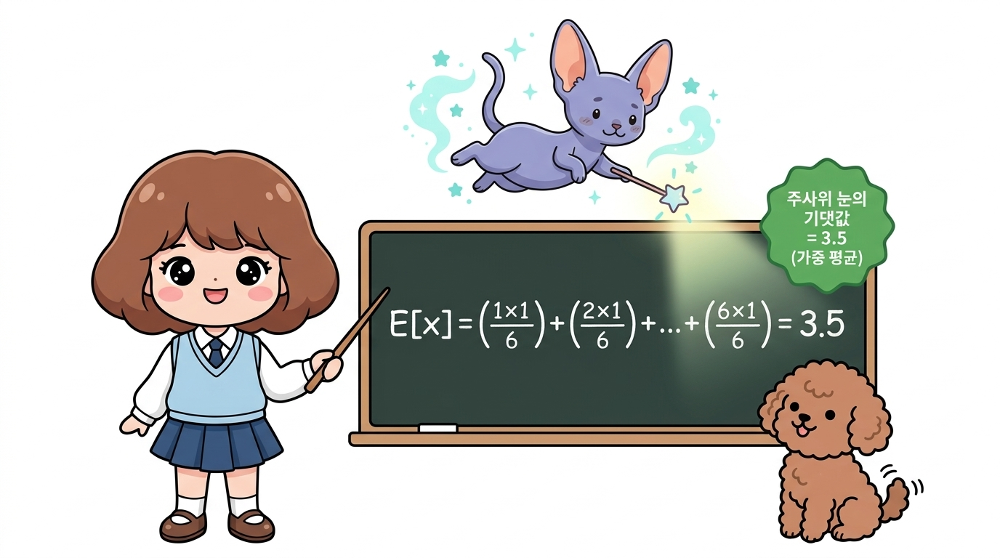
다음처럼 계산하면 됩니다. \(\mathbb{E}[x] = 1 \cdot \frac{1}{6} + 2 \cdot \frac{1}{6} + 3 \cdot \frac{1}{6} + 4 \cdot \frac{1}{6} + 5 \cdot \frac{1}{6} + 6 \cdot \frac{1}{6} = 3.5\)
이와 같이 각각의 ‘눈 개수’와 ‘확률’을 곱한 다음, 그 모두를 더합니다.
참고로 합(시그마, Σ) 기호를 쓰면 기댓값을 다음 식으로도 표현할 수 있습니다. \(\mathbb{E}[x] = \sum_x x p(x)\)
백업 다이어그램
백업 다이어그램은 [그림 06-2]와 같이 주사위 눈 개수가 두 번째 줄에 배치된 모습이 됩니다.
그림 06-2 주사위의 백업 다이어그램
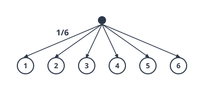
주사위와 동전
자, 이번에는 [그림 06-3]과 같은 문제를 생각해봅시다.
그림 06-3 주사위와 동전을 순서대로 던지는 문제
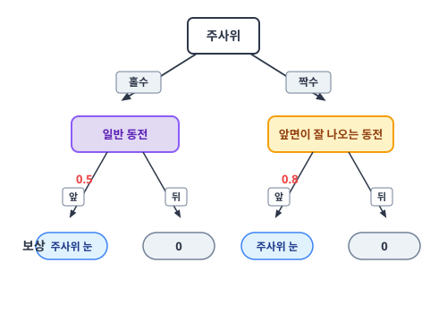
이번 문제는 주사위를 먼저 던지고 이어서 동전을 던지는 방식으로 진행됩니다.
이때 주사위를 던져 짝수가 나오면 앞면이 잘 나오는 동전(확률 = 0.8)이 주어지고, 홀수가 나오면 일반 동전(확률 = 0.5)이 주어집니다. 그런 다음 주어진 동전을 던져 앞면이 나오면 주사위의 눈 개수만큼을 보상으로 얻습니다. 반대로 뒷면이 나온다면 보상은 0입니다.
예를 들면 다음과 같습니다.
• 주사위 눈이 4개이고 이어서 (앞면이 나오기 쉬운) 동전이 앞면이면 보상은 4이다.
• 주사위 눈이 5개이고 이어서 (일반) 동전이 뒷면이면 보상은 0이다.
이 문제의 ‘보상 기댓값’은 얼마일까요? 먼저 백업 다이어그램을 그려봅시다.
그림 06-4 주사위와 동전을 순서대로 던지는 문제의 백업 다이어그램
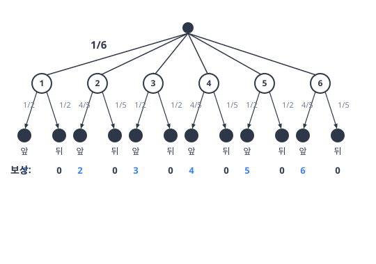
그림을 보면, 예컨대 주사위가 1이 나올 확률은 1/6이고 이어서 동전의 앞면이 나올 확률은 1/2입니다. 그리고 이때의 보상이 1이죠.
다시 말해 다음과 같이 표현할 수 있습니다.
• 1/6 × 1/2 = 1/12의 확률로
• 보상 1을 얻는다.
‘보상 기댓값’을 구하려면 모든 경우에 대해 똑같이 계산하여 다 더하면 됩니다. 실제로 해보면 다음과 같습니다. \(\left(\frac{1}{6} \cdot \frac{1}{2} \cdot 1\right) + \left(\frac{1}{6} \cdot \frac{1}{2} \cdot 0\right) + \left(\frac{1}{6} \cdot \frac{4}{5} \cdot 2\right) + \left(\frac{1}{6} \cdot \frac{1}{5} \cdot 0\right) + \left(\frac{1}{6} \cdot \frac{1}{2} \cdot 3\right) + \left(\frac{1}{6} \cdot \frac{1}{2} \cdot 0\right) +\) \(\left(\frac{1}{6} \cdot \frac{4}{5} \cdot 4\right) + \left(\frac{1}{6} \cdot \frac{1}{5} \cdot 0\right) + \left(\frac{1}{6} \cdot \frac{1}{2} \cdot 5\right) + \left(\frac{1}{6} \cdot \frac{1}{2} \cdot 0\right) + \left(\frac{1}{6} \cdot \frac{4}{5} \cdot 6\right) + \left(\frac{1}{6} \cdot \frac{1}{5} \cdot 0\right)\) \(= 2.35\)
드디어 보상의 기댓값을 알아냈습니다.
방법은 [그림 06-4]의 말단 노드가 발생할 확률과 그때의 보상을 곱하는 계산을 모든 후보에 수행한 다음 다 더하는 것이었습니다.
문자 표현 개선
지금까지 계산한 것을 문자로 표현해봅시다. 주사위의 눈을 x, 동전의 결과(앞 혹은 뒤)를 y로 표기하겠습니다.
이번 문제에서는 주사위 눈 개수에 따라 동전 앞면이 나올 확률이 달라집니다.
| 이 설정은 *조건부 확률 *p(y | x)**로 표현하며 값은 다음과 같습니다. |
\(p(y = \text{앞} \mid x = 4) = 0.8\) \(p(y = \text{뒤} \mid x = 4) = 0.2\)
또한 x와 y가 동시에 일어날 확률, 즉 ‘동시 확률’은 다음과 같습니다.
\[p(x, y) = p(x) p(y \mid x)\][!TIP] 친절한 개념 노트: 확률의 곱셈 정리(Multiplication Rule of Probability) 이 수식은 확률론에서 매우 중요한 확률의 곱셈 정리를 나타냅니다.
- 동시 확률 p(x, y): 주사위 눈금 x가 나오고 동시에 동전 앞/뒷면 y가 발생할 확률입니다.
*조건부 확률 *p(y x)*: 먼저 일어난 주사위 눈금 *x의 결과가 고정되어 있을 때, 그 다음 사건인 동전 결과 y가 일어날 확률입니다.
곱셈 법칙: 두 사건이 연달아 일어나는 확률 p(x, y)는 “첫 번째 사건이 일어날 확률 p(x)”에 *“첫 번째 사건이 일어났다는 가정하에 두 번째 사건이 일어날 조건부 확률 *p(y x)”**를 곱해서 구할 수 있다는 원리입니다. 예컨대 주사위 눈이 4가 나오고 동전이 앞면이 나올 확률은 다음과 같이 계산됩니다: \(p(4, \text{앞}) = p(x=4) \times p(y=\text{앞} \mid x=4) = \frac{1}{6} \times 0.8 = 0.133... \text{ (약 } 13.3\% \text{)}\)
이번 문제에서 보상은 x와 y의 값에 의해 결정됩니다.
따라서 보상을 함수 r(x, y)로 나타낼 수 있습니다.
\(r(x = 4, y = \text{앞}) = 4\) \(r(x = 3, y = \text{뒤}) = 0\)
기댓값은 ‘값 × 그 값이 발생할 확률’의 합입니다.
그러므로 보상의 기댓값은 다음 식으로 나타낼 수 있습니다.
\(\mathbb{E}[r(x, y)] = \sum_x \sum_y p(x, y) r(x, y)\) \(= \sum_x \sum_y p(x) p(y \mid x) r(x, y)\)
이 수식의 형태는 다음 절에서 도출할 벨만 방정식에서도 동일하게 등장합니다.
이로써 벨만 방정식을 맞이할 준비가 끝났습니다.
여기까지 이해했다면 벨만 방정식 도출도 어렵지 않을 것입니다.
06.2.2 벨만 방정식 도출
벨만 방정식을 도출해보겠습니다.
먼저 복습을 하자면, 앞서 ‘수익‘을 다음과 같이 정의했습니다. \(G_t = R_t + \gamma R_{t+1} + \gamma^2 R_{t+2} + \cdots\)
[식 06.2]
이번 절에서는 보상을 무한히 계속 받을 수 있는 지속적 과제continuous task를 가정합니다.
수익 Gt는 시간 t 이후로 얻을 수 있는 보상의 총합입니다.
단, 할인율 γ에 따라 더 나중에 받는 보상일수록 값이 기하급수적으로 감소합니다.
그럼 이쯤에서 [식 06.2]의 t에 t + 1을 대입해보겠습니다.
그러면 잘 보이지 않던 [식 06.2]의 구조가 또렷하게 드러납니다. \(G_{t+1} = R_{t+1} + \gamma R_{t+2} + \gamma^2 R_{t+3} + \cdots\)
[식 06.3]
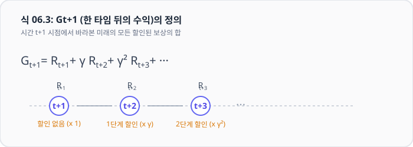
[식 06.3]는 시간 t + 1 이후에 얻을 수 있는 보상의 합입니다.
이 식을 적용하여 [식 06.2]을 다음과 같이 변형하겠습니다. \(G_t = R_t + \gamma R_{t+1} + \gamma^2 R_{t+2} + \cdots\) \(= R_t + \gamma (R_{t+1} + \gamma R_{t+2} + \cdots)\) \(= R_t + \gamma G_{t+1}\)
[식 06.4]
[식 06.4]으로부터 수익인 Gt와 Gt+1의 관계를 알 수 있습니다.
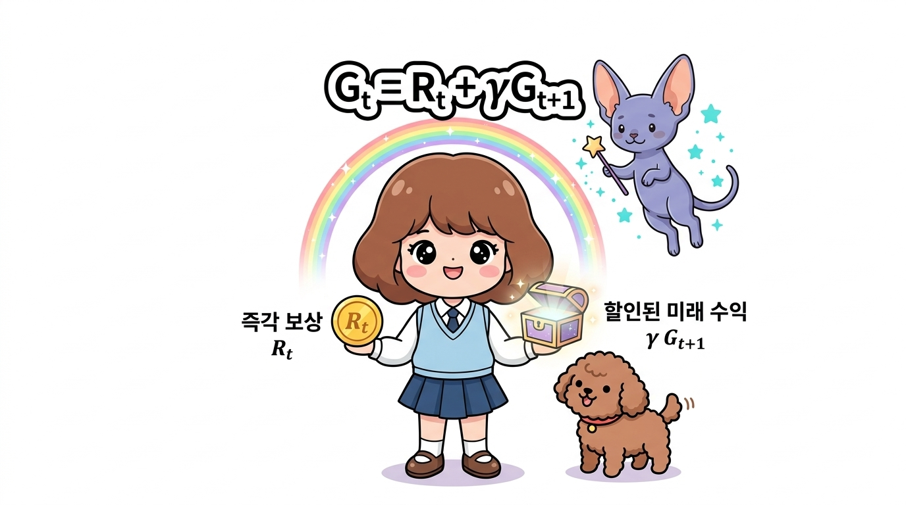
이 관계는 수많은 강화 학습 이론과 알고리즘에서 사용됩니다.
이어서 [식 06.4]을 상태 가치 함수의 수식에 대입해보겠습니다.
상태 가치 함수는 수익에 대한 기댓값(기대 수익)이며, 다음 식으로 정의됩니다. \(v_{\pi}(s) = \mathbb{E}_{\pi}[G_t \mid S_t = s]\)
[식 06.5]
[식 06.5]와 같이 상태 s의 상태 가치 함수가 vπ(s)로 표현됩니다.
이 식의 Gt에 [식 06.4]을 대입하면 다음과 같습니다. \(v_{\pi}(s) = \mathbb{E}_{\pi}[G_t \mid S_t = s]\) \(= \mathbb{E}_{\pi}[R_t + \gamma G_{t+1} \mid S_t = s]\) \(= \mathbb{E}_{\pi}[R_t \mid S_t = s] + \gamma \mathbb{E}_{\pi}[G_{t+1} \mid S_t = s]\)
[식 06.6]
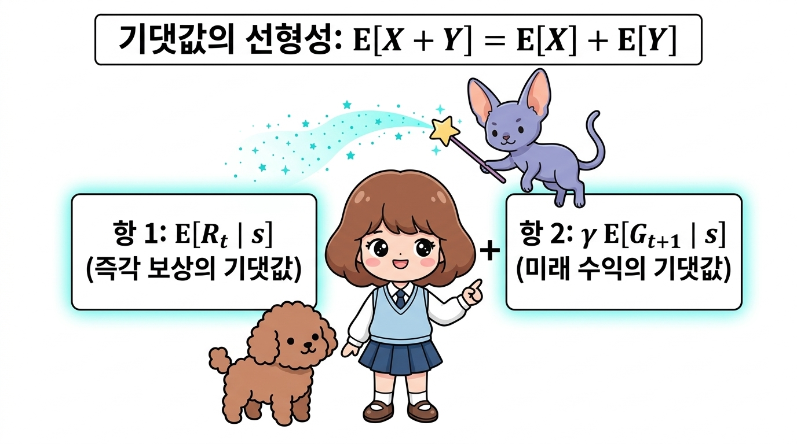
마지막 식의 전개는 기댓값의 ‘선형성’ 덕분에 성립됩니다.
선형성이란 확률 변수 X와 Y가 있을 때 E[X + Y] = E[X] + E[Y]가 성립함을 말합니다.
NOTE_ 이 책에서는 에이전트의 정책을 확률적 정책 π(a s)로 가정합니다. 결정적 정책도 확률적 정책으로 표현할 수 있기 때문이죠. 마찬가지로 환경의 상태 전이도 확률적이라고, 즉 수식으로 p(s’ s, a)라고 가정합니다.
🔍 구체적인 예제로 [식 06.6]의 의미 파헤치기
그럼 이제 분리해낸 [식 06.6]의 두 항을 하나씩 차근차근 구하며 수식의 비밀을 밝혀봅시다.
| 먼저 첫 번째 항인 Eπ[Rt | St = s]부터 시작하겠습니다. |
이 식은 “현재 상태 s에서 에이전트가 자신의 정책 π에 따라 어떤 행동을 선택했을 때, 즉시 얻게 될 즉각 보상 Rt의 평균값(기댓값)”을 의미합니다.
이해를 돕기 위해 아래의 상태와 행동 관계도를 함께 보시죠.
그림 06-5 상태와 행동의 관계
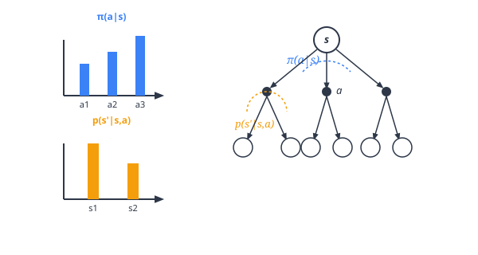
| 먼저 상황을 확인합니다. 현재 상태가 s이고, 에이전트는 정책 π(a | s)에 따라 행동합니다. |
예를 들어 다음의 세 가지 행동을 취할 수 있다고 해봅시다. \(\pi(a = a_1 \mid s) = 0.2\) \(\pi(a = a_2 \mid s) = 0.3\) \(\pi(a = a_3 \mid s) = 0.5\)
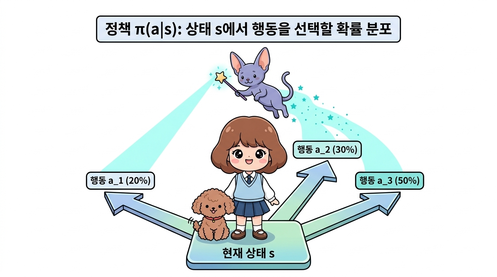
에이전트는 이 확률 분포에 따라 행동을 선택합니다.
| 그러면 상태 전이 확률 p(s’ | s, a)에 따라 새로운 상태 s’로 이동합니다. |
예를 들어 행동 a1을 수행했을 때 전이될 수 있는 상태 후보가 두 개라면 다음과 같은 값을 취합니다. \(p(s' = s_1 \mid s, a = a_1) = 0.6\) \(p(s' = s_2 \mid s, a = a_1) = 0.4\)
그리고 마지막으로 보상은 r(s, a, s’) 함수로 결정됩니다.
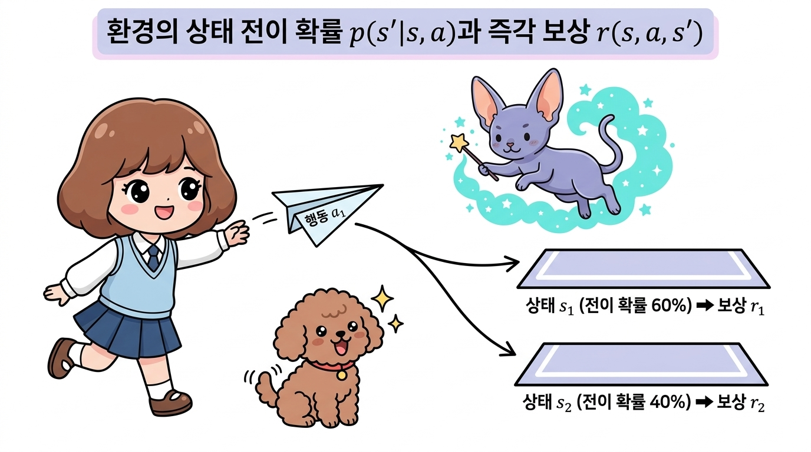
이상이 우리가 처한 상황입니다.
이제 구체적인 예를 들어 계산해봅시다.
에이전트가 0.2의 확률로 행동 a1을 선택하고 0.6의 확률로 상태 s1로 전이한다고 가정하죠. 이 경우 얻게 되는 보상은 다음과 같습니다.
• π(a = a1 | s)p(s’ = s1 | s, a = a1) = 0.2 × 0.6 = 0.12의 확률로
• r(s, a = a1, s’ = s1)의 보상을 얻는다.
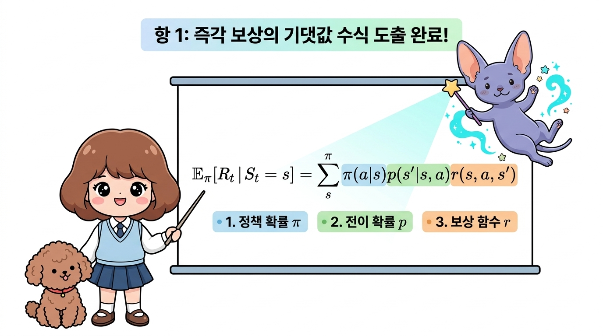
기댓값을 구하려면 모든 후보에 똑같은 계산을 수행하여 다 더하면 됩니다. \(\mathbb{E}_{\pi}[R_t \mid S_t = s] = \sum_{a, s'} \pi(a \mid s) p(s' \mid s, a) r(s, a, s')\)
| 이와 같이 ‘에이전트가 선택하는 행동의 확률’ π(a | s)와 ‘전이되는 상태의 확률’ p(s’ | s, a) 그리고 ‘보상 함수’ r(s, a, s’)를 곱합니다. |
이 계산을 모든 후보에 수행한 다음 다 더했습니다.
잘 생각해보면 앞 절의 ‘주사위와 동전’ 예제에서 보여준 수식과 같은 구조입니다.
이것으로 [식 06.6] 첫 번째 항의 전개는 정복했습니다(그림 06-6).
그림 06-6 전개 중인 식
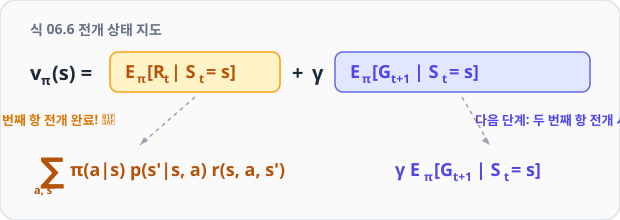
| 이제 γ Eπ[Gt+1 | St = s]가 남았습니다. |
| 여기서 γ는 상수이므로 Eπ[Gt+1 | St = s]에 대해서만 살펴보죠. |
이 식은 상태 가치 함수의 정의식과 비슷하지만 Gt+1 부분이 다릅니다. 상태 가치 함수는 다음과 같이 Gt+1이 아니라 Gt였습니다. \(v_{\pi}(s) = \mathbb{E}_{\pi}[G_t \mid S_t = s]\)
[식 06.5]
먼저 [식 06.5]의 t에 t + 1을 대입합니다. \(v_{\pi}(s) = \mathbb{E}_{\pi}[G_{t+1} \mid S_{t+1} = s]\)
이 식은 상태 St+1 = s에서의 가치 함수입니다.
| 이제 우리의 관심은 Eπ[Gt+1 | St = s]입니다. |
이 식은 현재 시간이 t일 때 한 단위 뒤 시간(t+1)의 기대 수익을 뜻합니다. 문제 해결의 핵심은 조건인 St = s를 St+1 = s’ 형태로 바꾸는 것입니다.
즉, 시간을 한 단위만큼 흘려보내는 것입니다.
앞서와 마찬가지로 구체적인 예를 들어 설명하겠습니다.
지금 에이전트의 상태는 St = s입니다. 그리고 에이전트가 0.2의 확률로 a1 행동을 선택하고, 0.6의 확률로 s1 상태로 전이한다고 해봅시다.
그러면 다음과 같이 나타낼 수 있습니다.
| • π(a = a1 | s)p(s’ = s1 | s, a = a1) = 0.2 × 0.6 = 0.12의 확률로 |
| • Eπ[Gt+1 | St1 = s1] = vπ(s1)로 전이된다. |
이와 같이 다음 단계의 시간을 ‘보는’ 것으로 다음 상태의 가치 함수를 얻을 수 있습니다.
이제 기댓값 Eπ[Gt+1 | St = s]를 구하려면 모든 후보에 이 계산을 수행하여 다 더합니다. \(\mathbb{E}_{\pi}[G_{t+1} \mid S_t = s] = \sum_{a, s'} \pi(a \mid s) p(s' \mid s, a) \mathbb{E}_{\pi}[G_{t+1} \mid S_{t+1} = s']\) \(= \sum_{a, s'} \pi(a \mid s) p(s' \mid s, a) v_{\pi}(s')\)
두 번째 항 전개도 마쳤습니다.
앞서 전개한 식에 대입하면 다음 식이 도출됩니다. \(v_{\pi}(s) = \mathbb{E}_{\pi}[R_t \mid S_t = s] + \gamma \mathbb{E}_{\pi}[G_{t+1} \mid S_t = s]\) \(= \sum_{a, s'} \pi(a \mid s) p(s' \mid s, a) r(s, a, s') + \gamma \sum_{a, s'} \pi(a \mid s) p(s' \mid s, a) v_{\pi}(s')\) \(= \sum_{a, s'} \pi(a \mid s) p(s' \mid s, a) \{ r(s, a, s') + \gamma v_{\pi}(s') \}\)
[식 06.7]이 바로 벨만 방정식입니다.
벨만 방정식은 ‘상태 s의 상태 가치 함수’와 ‘다음에 취할 수 있는 상태 s’의 상태 가치 함수’의 관계를 나타낸 식으로, 모든 상태 s와 모든 정책 π에 대해 성립합니다.
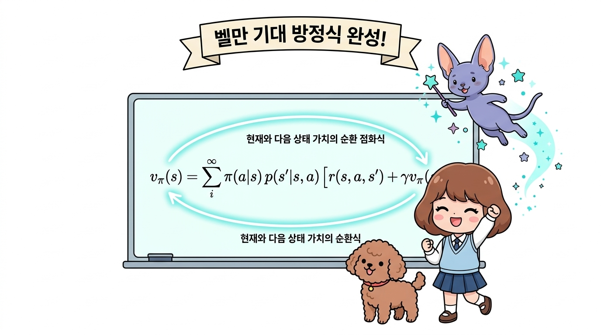
이 식을 백업 다이어그램을 활용하여 각 수식의 항들이 의미하는 바를 시각적으로 매칭해 정리하면 다음과 같습니다.
그림 06-6a 벨만 방정식의 백업 다이어그램 상세 구조
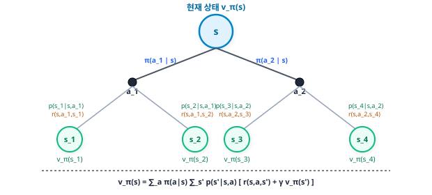
위 [그림 06-6a]에서 보듯, 벨만 방정식은 상태 s에서 발생할 수 있는 모든 행동 a와 그에 따른 다음 상태 s’에 대해 “확률 × (보상 + 할인된 다음 상태 가치)”를 재귀적으로 합산하여 현재 가치 vπ(s)를 도출해내는 완벽한 흐름을 표현하고 있습니다.